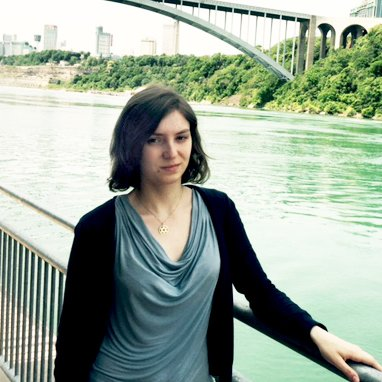

Anastassiya Neznanova
Hi, I am Anastassiya Neznanova, and I am a current junior studying Computer Science at Queens College, CUNY, New York. Recently, I graduated from LaGuardia Community College with the Associate Degree in Computer Science. I am excited about math and science. Some of my awards at LaGuardia Community College that I received were the following:
- Foundation Scholarship for academic performance, Spring/Fall 2014
- Women in STEM grant in mathematics, Fall 2014
- MAA Maxima Tensor-Summa grants in mathematics, Spring/Fall 2014
- Mathematical Association Of America (MAA) certificate for paper presentation
I was selected to participate in a President's Society program, at LaGuardia Community College, which helps high-achieving students to build a strong foundation of practical skills and a network of successful mentors. Currently, I serve as an ambassador for the LaGuardia Community College with civic leaders and donors and mentor 3 students.
I am passionate about education. I volunteered to teach 18 middle school students at the Global Technology Preparatory with Citizen Schools the fundamentals of HTML and CSS using Applied Behavioral Analysis (ABA) as a motivational tool.
I designed, developed and evaluated web surveys and report pages using PHP, JavaScript, HTML and CSS for the Math, Engineering and Computer Science Department that reduced the use of paper and time consumption for data analysis by 50%. Moreover, I created and designed game "Lead Community College Student to Success" in Phaser framework using HTML and JavaScript.
Besides programming, I enjoy doing origami. I completed an undergraduate research in mathematics where I investigated the origami techniques that I could apply to solve such famous problems as Delian Problem (doubling a cube). I wrote a paper on the topic: "From Ancient Greece to Beloch’s Crease: A Historical Review of the Delian Problem and Origami" that was accepted for publishing by International Journal of Undergraduate Research and Creative Activities.
When I am not coding, I prefer to read, study new algorithms, do origami, take beautiful pictures, solve math puzzles or play with my cutie cat and bird.
